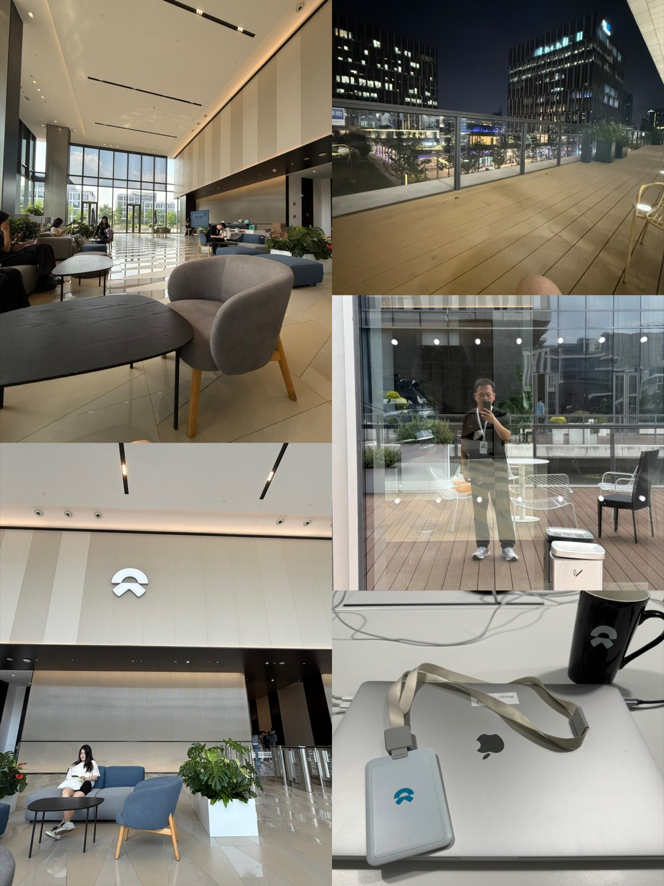

跳至正文
C
.
阿豪
/ Ahao
首页
关于
经历
作品
校园
影像
手记
联系
The Ahao Journal / 05 / VISUAL DIARY
2026 · 秋季更新
在屏幕之外，
还有很多值得看见。
山间、城市、咖啡馆与实习的日常。这里收录个人留影与生活记录，点击照片可以放大查看。
↗
旅行 / 山野
01 / 04
↗
日常 / 专注
02 / 04
↗
旅行 / 长沙
03 / 04

↗
实践 / 蔚来
04 / 04
关闭 ×
←
→